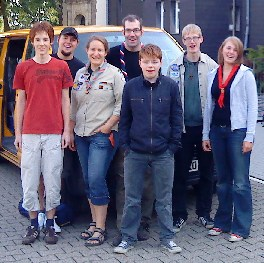
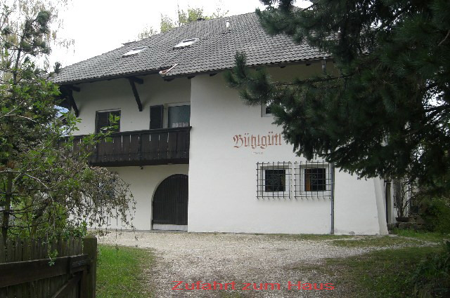
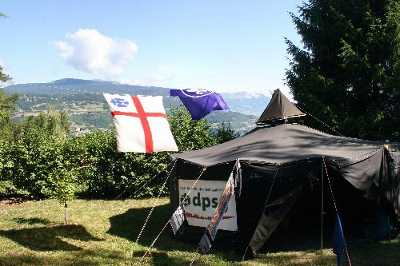
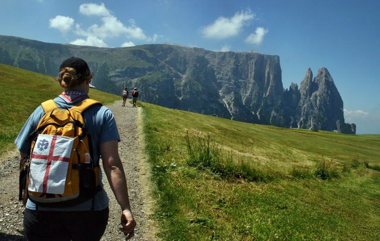
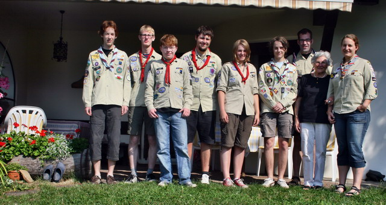
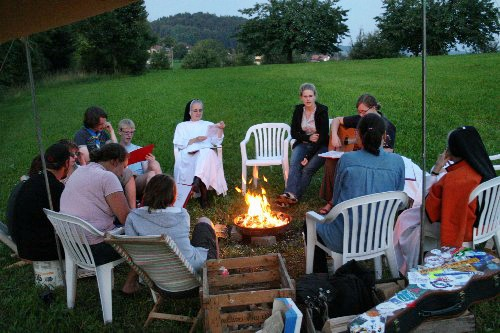

Sommerlager der Rover 2009
Endlich Sommerferien! – Endlich können sie ins Sommerlager starten!
Schon lange haben sich die Teilnehmer/innen der Haßlinghauser Roverstufe darauf gefreut, am Sonntag, den 26.07.2009 ins Sommerlager 2009 aufbrechen zu können.
Zum obligatorischen Abschiedsfoto stellen sich alle gern vor ihrem Reisegefährt – dem VW-Bulli – auf.
|  | |
| Gleich kann es losgehen |
| Das Ziel ihrer ersten Etappe liegt in Völs am Schlern, wo unsere Pfadfinder ihre Zelte quasi am Fuß dieses mächtigen Gebirgsmassivs errichten. |  |
|  | Dort sind sie am Sonntagabend liebevoll von der Hausherrin des Hauses Bühlgütl empfangen worden. Im Laufe der Woche kann von hier aus zu so manchen Unternehmungen aufgebrochen werden. |
Im Garten dieses Privatgrundstücks mit Blick zum Ritten, Brenner, Schlern und zum Rosengarten verbringen sie die erste erlebnisreiche Woche.
|  | |
| Von der Jurte aus reicht der Blick bis zum Rittner Horn (hinten links) | |
 |
|
 |
Weil am Mittwoch (29.07.09) der Berg ruft und das Wetter mit wolkenlosem Himmel und Temperaturen um die 30 Grad Celsius einfach prachtvoll ist, wandern unsere Rover auf den 2.563 m hohen Schlern in eine rel. angenehme Kühle hinein.
|  | |
 |
|
| Zum Schlern hinauf gibt es breite Wege und schmale Stege | |
 |
|
| Rast vor dem Schlern … | |
 |
|
| … und in der „Hütte“ auf dem Schlern |
Nach so herrlichen Erlebnissen ist abends ist in der Regel eine Runde Schwimmen im Völser Weiher angesagt, das die notwendige Erfrischung nach all´ den angenehme (?) Mühen des Tages bringt. Vom Lager aus bis dorthin sind es mit dem Bulli gottlob nur wenige Minuten Fahrzeit.
Am Sonntag (02.08.2009) heißt es dann: Zelte abbrechen, alles in den Bulli verstauen und auf zu neuen Taten.
|  | |
| Abschiedsfoto mit Gastmutter Luise (2. v. r.) am 02.08.2009 |
Nach einer Reise quer über den Alpenhauptkamm werden die Rover am Abend in Rickenbach in der Schweiz erwartet.
 |
Dort können unsere Jugendlichen im Klostergelände des Klosters der Dominikanerinnen in Rickenbach (Lu) Schweizer Luft schnuppern.
| Kerstin, ehemalige Pfadfinderleiterin in unserem Stamm St. Josef Haßlinghausen, lebt dort im Kloster z. Zt. als Postulantin und hat so manche Überraschung für unsere Pfadfinder vorbereitet. Warten wir also auf weitere Berichte. |  |
Zur abendlichen Runde trifft man sich ganz „zünftig“ am Lagerfeuer.
|  | |
Be 10.08.2009